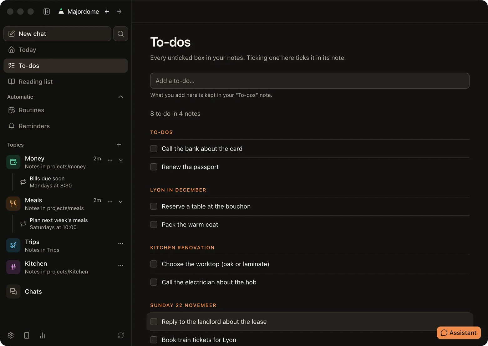

A second brain that keeps working while you are away.
Your notes, plus the AI you already pay for. It reads them, runs routines, and asks before touching anything sensitive.
For Apple silicon. No account needed.
What it is made of.
Said once, known for good.
What it learns goes into a note you can open, edit or delete.
One day with it.
-
on its own
Your day is ready
A summary from your notes and calendar.
-
you
Drop things in
A receipt, a link, a thought. It files them.
-
on your phone
It asks first
One tap before it opens anything private.
-
while you are out
Routines run
“Every Friday, list what I spent.”
What it does.
Every to-do, from every note
Tick one here and it is ticked in its note.

Routines, in your words
Say what and when. It runs on schedule and posts where you choose.
How routines work
A reading list that says what is next
Three things at a time. Finished, or not now.

A topic for each part of life
Money, Meals, Trips: one chat, its notes, its routines.

Everything it did, with an undo
Each run leaves one line saying what it changed in your notes. One press takes it back. Try it.
How its memory worksOn your phone too
The same app on your phone. Sign in and it finds your computer, with no code to scan.
How signing in works
Pick your setup.
Start on your Mac. Add the rest later, without starting over.
Just my Mac
Free. Nothing to sign up for.
- Majordome for MacFree and open source.
-
Your AI planClaude or ChatGPT, the one you have.
Mac and phone
Free. The same app, on your Home Screen.
Always on
A server that never sleeps. It keeps your conversations, so every device shows the same ones.
- Majordome serverHosted for you. €22 a month, 7 days free.
- Your serverRented in your name, about €5 a month.
In each one the assistant is your own Claude or ChatGPT plan. A Majordome server uses Claude. The awake hours drawn are an example.
Yours, all the way down.
- Your notesand their history
- Your conversationswith the assistant
- Private documentsencrypted
- Your AI sign-inand saved passwords
Gets your message and the notes it reads, straight from your Mac, under your own account.
No line to it. It receives none of these, no usage statistics and no crash reports.
- An address for your phone
- An account
- A backup copy
- A server
Add a server and the same four things live there too. On a Majordome server, that is a machine in Paris. What each optional service keeps
- Your filesMarkdown on your machine.
- Your AI planClaude or ChatGPT. Nothing extra.
- Your machinesNo account needed. Sign in only to link devices.
- Open sourceMIT. A fork of T3 Code.
Next to the others.
Assistants that work for you come in a few shapes. Majordome is the one built around a folder of notes you own, in an app you open.
| Majordome | OpenClaw | Hermes Agent | Grok Bot | |
|---|---|---|---|---|
| Where you use it | Its own app, on your computer and phone | Chat apps such as WhatsApp, Telegram and Slack | A terminal, and chat apps through a gateway | xAI's app |
| Where it runs | Your computer, or a server you own | A machine you set up and run | A machine or server you set up and run | A cloud computer at xAI |
| What it remembers in | Your notes: plain Markdown, one folder per topic | Its own memory of your conversations | Memory files and a search of past sessions | Each bot's own memory |
| What you pay for | The Claude or ChatGPT plan you already have | A ChatGPT plan, or an AI key billed by use | A ChatGPT or Nous plan, or an AI key billed by use | A paid xAI plan |
| The code | Open source | Open source | Open source | Closed |
Where the others are ahead: OpenClaw and Hermes Agent answer in the chat apps you already use and work with many AI providers, and Hermes Agent writes new skills for itself. From each project's public pages, November 2026: OpenClaw, Hermes Agent, Grok Bot.
What it adds to T3 Code.
T3 Code runs coding agents on your projects. Majordome points the same engine at your notes.
- The engine behind every chat
- Claude, ChatGPT and other AI
- Desktop and web app
- Linked machines
- Scheduled tasks
- Projects
- Pull requests
- Terminal
- T3 account
- Notes folder as memory
- Today
- To-dos from every note
- Reading list
- Topics
- Key facts
- Routines in your words
- What it did, with undo
- Skills it writes itself
- Private documents
- Gmail, Calendar, Drive
- Back up my brain
- Phone, nothing to install
- Sign in to find your servers
- Your own server, set up for you
- Set up by asking
- Plain words
Two questions, then Today.
-
1
Download, drag, open
The file for your Mac, into Applications.
-
2
Answer two questions
Both are on the welcome screen.
Welcome to MajordomeThe assistantSign in to Claude or ChatGPT✓ ReadyNotesStart new notes, or choose a folder you have✓ Ready -
3
It opens on Today
Ask it something.
What is on today?Two to-dos, and the dentist at 15:00.
Then, when you want them, each is one page in Settings. Your account: sign in with an email or Google. Your phone: open majord.me/open on it, sign in, press Open. Back up my brain: pick a folder and a passphrase, and a copy is made every night. How signing in works